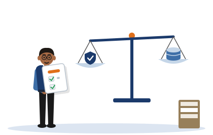
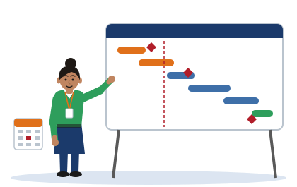

Session 4 notes
Responsible Practice, Delivery Planning and Ethics
These are the notes for Session 4, the last taught session. They show you how to write about law and ethics for your own project, how to plan its delivery, how to assess its risks, and how to apply for ethics approval.
- why generic legal writing is a sign of a method that is not yet decided
- how to apply the two laws your rubric names to your own method, instead of only naming them
- what to do if your project finds a real weakness, and what dual-use means
- what a milestone is, and how to plan in P-weeks and D-weeks
- the two kinds of risk that a proposal needs, and which one students leave out
- when and how to apply for ethics approval
[Illustrative example - do not cite]
Three invented students appear in Session 4: Tharindu, Chathura and Dilini. You met them in Session 1. None of them is real, and neither are their projects or the organisations they work with: Sevana Bank, Pahana Retail and Suwa Sevana Teaching Hospital.
The passages written in their names are invented. So are Chathura's milestone plan, the two risk registers, the two position statements in Section 3.1, and the passage that you grade in Section 5.5. Never cite them.
The laws and bodies that the notes name are real: the Computer Misuse Act 1990, the General Data Protection Regulation (GDPR) and the BCS Code of Conduct. What the notes say each invented student decided about them is invented.
The plain text on this page is the Session 4 student notes, word for word. It is the same text as the notes document you receive in class.
The coloured boxes are extra help. They give a short summary in plain English, explain the pictures and phrases the notes use, and let you test yourself.
If a box and the notes ever seem to disagree, follow the notes and tell your lecturer.
Nothing on this page is legal advice. The notes say so themselves in their last paragraph, and it is true of the boxes too.
1. Why this session matters
Most proposals lose marks in this part for one reason. The legal and ethical writing is generic: it could belong to any project.
The notes give the cause. You can say which law matters only when you have decided exactly what your method does. Vague legal writing is a sign of a vague method.
So this session does not ask you to learn more law. It asks you to look at your own method and to read your duties out of it.
Words you will meet in this section
| Word | What it means |
|---|---|
| Criterion 4 | The fourth of the five parts that your proposal is marked on. It covers your delivery plan, your risk assessment, and your legal and ethical analysis. |
| Cohort | All the students who take this module together. |
| Generic | Fitting any project. A generic sentence would still be true if you moved it into another student's proposal. |
| Method | What you will actually do in your project: what you build, what data you use, where it runs and what it produces. |
| Uncommitted method | A method that you have not finally decided. |
| Provision | One numbered part of a law, such as a section of an Act or an article of a regulation. |
| Statute | A written law passed by a parliament. An Act is a statute. |
| Authorisation | Permission to access or test a system, given by the person who owns it. |
| Legal exposure | How far your work could bring you into conflict with a law. |
| Disclosure | Telling the right people about a weakness that you have found, in a careful order. |
| Ethics application | The form in which you describe your method so that the university can approve it. |
| Appendix A | The part at the end of your proposal that holds your ethics-approval evidence. |
| P7 | Week 7 of this module. P stands for preparation. The module map explains the notation. |
Under Criterion 4 the cohort does not fail for lack of legal knowledge. It clusters at Pass because the legal and ethical section is generic: the sentences would survive being pasted, unaltered, into any other proposal in the room. That is the same disease this module has been treating all term, appearing one last time in a new place.
- it clusters at Pass
- The picture: Marbles on a table that is slightly low in one place. They roll together and stop there.
- Why it works: A cluster is a group of things close together. The notes say that most of the cohort ends in the same grade band for this criterion: Pass, the lowest band that still passes. The students are not there because they know no law. They are there because they all make the same mistake.
- Where it stops working: Marbles cannot choose where they stop. You can. The rest of the session shows the one change that moves a legal section out of that band.
- would survive being pasted
- The picture: You cut a sentence out of one page and stick it onto another page. Nobody notices.
- Why it works: A sentence survives being pasted if it is still true, and still fits, in a different student's proposal. That is what generic means. Section 2.5 turns this picture into a test that you can use on your own writing.
- Where it stops working: Paper and glue only move the words. The test is about meaning: a sentence fails it when moving it would make it false or strange. Some good sentences, such as a definition, could also be pasted anywhere. The test is for the sentences that claim to analyse your project.
The diagnosis matters more than the symptom. Genericness here is not laziness. It is a symptom of a method you have not yet committed to. You cannot say which provision bites until you can say what your method actually does: what it touches, what it captures, where it runs, and what it produces. A proposal that says "all data will be stored securely" is telling the marker, without meaning to, that its author has not yet decided what data the project will hold.
- which provision bites
- The picture: A dog that barks at everyone who walks past, but bites only the person who steps into its garden.
- Why it works: A law exists for everyone. A provision bites when it really applies to something that your method does, so that you must act on it. The notes ask you to find the one or two provisions that bite your project, and to stop listing the laws that only bark.
- Where it stops working: A bite is an attack, and you would keep away from the dog. A provision that bites is not your enemy. It tells you where to be careful. Section 2.5 also shows a second answer: change the method so that the provision has nothing to hold on to.
The idea to carry out of this session: The law becomes specific at the exact moment your method does. Generic legal analysis is a symptom of an uncommitted method, not a missing statute.
The arc completes here. Session 1 framed the problem. Session 2 framed it against the known. Session 3 framed it as testable. Session 4 frames its boundaries and consequences. Authorisation limits, legal exposure and disclosure define where the work may and may not go.
| Session | What it framed | The question it asked |
|---|---|---|
| Session 1 | The problem | What exactly is your question? |
| Session 2 | The problem against what is known | What has already been done, and what is missing? |
| Session 3 | The problem as something testable | How will you know that it worked? |
| Session 4, this page | Its boundaries and consequences | Where may the work go, and what could it cause? |
What this session unlocks: the responsible-practice and delivery components of the Week 8 draft; the ethics application window, which opens now in P7 (the seventh week of this module); and Appendix A of the Week 12 submission.
- the ethics application window, which opens now
- The picture: A ticket window at a station. Before it opens, nobody can serve you, however early you arrive.
- Why it works: From Week 7 you can hand in your ethics application. Before Week 7 you could not have written a useful one, because your method was not fixed until Session 3. The module map shows this order on one line.
- Where it stops working: A ticket window also closes at a fixed hour. The notes give no closing time for this one. They give a target: approval around Week 10, so that the evidence is ready for your Week 12 submission.
Check yourself
A proposal says: "All data will be stored securely." According to the notes, what does this sentence tell the marker?
That its writer has not yet decided what data the project will hold. The sentence is not wrong. It is empty, because it would be equally true of any project.
A student wants to improve a weak legal section by reading more about the law. Why do the notes say that this is the wrong place to start?
Because the cause is in the method, not in the law. You cannot say which provision bites until you can say what your method touches, what it captures, where it runs and what it produces. Decide those four things first. The legal analysis then becomes specific.
The notes say that this session completes an arc. What did each of the four sessions frame?
Session 1 framed the problem. Session 2 framed it against what is known. Session 3 framed it as something testable. Session 4 frames its boundaries and its consequences: where the work may go, and what it could cause.
2. Legal and ethical analysis for your project

This is the longest section. It takes two laws and shows how to apply each one to a project, instead of only naming it.
The first law is about access to computers. Its key word is "unauthorised", which means without permission. The second is about personal data, and the notes turn it into four questions about the data that your project holds.
A table then shows the three students. Each has a different legal problem, and each problem comes from the method.
The section ends with two passages about the same project, one weak and one strong, and a test that tells them apart.
Words you will meet in this section
| Word | What it means |
|---|---|
| Computer Misuse Act 1990 | A United Kingdom law about access to computers without permission. It is one of the two laws that your rubric names. |
| GDPR | The General Data Protection Regulation: a European law about how personal data may be collected, used and kept. It is the other law that your rubric names. |
| Section | Careful: this word has three uses in this session. Section 1 of an Act is a numbered part of a law. Section 2 of these notes is a part of this page. The legal section of your proposal is the part where you write your analysis. |
| Article | A numbered part of a regulation such as the GDPR. An Act has sections, and the GDPR has articles. |
| Unauthorised | Without permission from the owner. |
| Engaged | A section is engaged when it applies to what you do. "Not engaged" means that it does not apply here. |
| Instrument | In law: a formal legal document, such as an Act or a regulation. Here it does not mean a measuring device. |
| Testbed | A small system that you build yourself in order to run your test. |
| Cleared environment | A place where you have permission to test. |
| Project log | Your dated record of what you did and decided during the project. |
| Loophole | A gap in a rule that lets someone avoid the rule without breaking it. |
| Personal data | Information about a person who can be identified from it. |
| Lawful basis | The legal reason that allows you to use personal data at all. |
| Data minimisation | Holding only the personal data that you really need. |
| Special-category data | Kinds of personal data that the law protects more strongly, such as health data and biometric data. |
| Retention | How long you keep data before you destroy it. |
| Synthetic data | Data that you generate yourself, so that it describes no real person. |
| Hashed and truncated | Two ways to hide an identifier. Hashing replaces it with a code that cannot easily be turned back. Truncating cuts part of it away. |
| Configuration baseline | A published set of secure settings, such as the one that Chathura applies. Careful: in Session 3, a baseline was also the thing that you compare your result with. Both meanings appear in this session. |
| Seeds (verb) | Plants. Dilini seeds flaws: she places known weaknesses in her own test system. This is not seeding, your lecturer's word for Weeks 1 to 3 of the module. |
| Derive | To get one thing from another by reasoning. Here: to read your duties out of your method. |
| Assert | To say that something is true without showing why. |
| Falsified | Shown to be false. A claim that nothing could ever show to be false tells the reader nothing. |
| Tell | A sign that gives something away. Careful: Session 3 listed three tells of a real tool justification. The three tells in this session are different. They are the signs of a real legal analysis. |
| Operational test | A test that you can actually carry out, here on one sentence at a time. |
2.1 The Computer Misuse Act 1990, and why authorisation is the hinge
Section 1 concerns unauthorised access to computer material. Section 3 concerns unauthorised acts intended to impair the operation of a computer. Both turn on the word unauthorised, which is a question of fact about permission. It is not a question about your intent, your competence, or how careful you were.
This cuts both ways. A skilled and well-meaning test against a system you do not own is still unauthorised. A clumsy experiment on a testbed you built yourself is not. The consequence for your proposal is that you must say why the section is or is not engaged, rather than promising to obey the Act.
- this cuts both ways
- The picture: A knife with two sharp edges. It cuts whichever way you move it.
- Why it works: The same rule gives two results that may surprise you. A skilled, careful test on a system that is not yours is still unauthorised. A clumsy test on your own testbed is not. Permission decides both cases, and skill decides neither.
- Where it stops working: A knife with two edges is dangerous to the person who holds it. This rule is not. Once you see that permission is the only question, it protects you: build your own testbed, and the question is answered.
Session 3 said that everything in this module runs in a testbed that you build yourself, and that nothing is directed at a live system that belongs to someone else (Session 3 notes, Section 5). It promised that this session would explain why. This paragraph is the explanation.
The Act asks one question of fact: did you have permission? For a system that belongs to someone else, only its owner can give that permission, and a student project cannot assume that it has been given. For a testbed that you built, you are the owner, so the permission exists. You record it, and the question is closed.
So the module's rule is not a limit on your ambition. It is the thing that makes your work authorised from the first day.
2.2 Authorisation and testing boundaries
Work in a cleared environment. A self-built testbed is authorised by its owner, and in your case you are the owner. Record that authorisation in the project log rather than assuming it: an authorisation you can point to is evidence, and an authorisation you merely assert is not.
- an authorisation you can point to
- The picture: A train ticket in your hand, compared with telling the inspector that you bought one.
- Why it works: Evidence is something that another person can look at. A dated line in your project log that says who owns the testbed, and that the owner allows the test, can be looked at. A sentence that says "the testing was authorised" cannot.
- Where it stops working: A ticket is issued by someone else. For your own testbed, you are both the owner and the tester, so you write the record yourself. That is still worth doing: it shows that you asked the question before you began.
Isolate the environment so that nothing you generate reaches an external host, and decide the boundary before the work begins rather than after something interesting appears. An owned testbed is an authorisation, not a loophole, and your proposal should read that way.
- an authorisation, not a loophole
- The picture: A wall with a hole in it and a gate in it. One person climbs through the hole. Another walks through the gate with the owner's key.
- Why it works: A loophole is a way to escape a rule by a trick. Building your own testbed is not a trick to escape the Act. It is the Act being satisfied: access needs permission, and here permission exists. The notes ask you to write it that way, as a reason, and not as a clever escape.
- Where it stops working: The person with the key may go anywhere inside. Your authorisation does not reach so far. It covers the testbed and nothing outside it, which is why the same paragraph tells you to isolate the testbed and to decide its boundary before you begin.
2.3 The data-protection provisions that actually bite
Treat each of these as a question about your own dataset rather than as a definition to reproduce:
- Lawful basis: on what basis do you process the personal data your method touches?
- Data minimisation: what is the least you could hold and still answer your research question?
- Special-category data: does your domain make the data health, biometric or otherwise special?
- Storage limitation and retention: how long do you hold it, and what destroys it?
| The provision | The question to ask about your own data |
|---|---|
| Lawful basis | What gives you the right to use this personal data at all? |
| Data minimisation | Could you answer your research question with less data, or with less detail? |
| Special-category data | Is any of it a kind that the law protects more strongly, such as health data? |
| Storage limitation and retention | When will you destroy it, and how? |
If you cannot answer these from your method, the finding is not that you need to read more law. It is that the method is not yet fixed.
The notes analyse two laws: the Computer Misuse Act 1990 and the GDPR. These are the two that your rubric names, so they are the two that your proposal is marked against.
A project that you run in Sri Lanka also sits under Sri Lanka's own law. Two Acts cover the same ground: the Computer Crime Act, No. 24 of 2007, and the Personal Data Protection Act, No. 9 of 2022, which is coming into force in stages.
The questions of this session travel with you. Whatever the law is called, you still ask two things. Is my access authorised? What personal data does my method touch? If your method answers both clearly, you are ready to think about either set of laws.
This page does not analyse either Sri Lankan Act, and it is not legal advice. The institutional ethics process is the authority for what is permitted.
2.4 Method determines which provision bites
Read the table below as one claim tested three times, not as three separate examples. The three exemplar projects are Tharindu at Sevana Bank, Chathura at Pahana Retail, and Dilini at Suwa Sevana Teaching Hospital. Each triggers a different provision, and each reason comes entirely from the method.
Before you read the table, try to work out each row yourself: open Which Provision Bites.
| Project | The method feature that triggers it | What bites hardest | What changes in practice |
|---|---|---|---|
| E1 Tharindu, detection | Consumes authentication events that link a credential identifier to an access attempt | Data protection: lawful basis and data minimisation | Synthetic generation instead of capture; identifiers hashed and truncated; retention stated in the application |
| E2 Chathura, hardening | Produces a measured map of which attack techniques a configuration baseline stops and which it does not | No statute bites; the live issues are dual-use and disclosure | Efficacy reported in aggregate; a coordinated disclosure route agreed in advance in case a gap is found in a vendor default |
| E3 Dilini, methodology | Seeds authorisation flaws into a health-domain API and tests reaching records across roles | Special-category data, and the authorisation boundary itself | Patient records strictly synthetic, never derived from real records; testing confined to the researcher's own instance; no real deployment approached |
Notice that Chathura has the least legal exposure of the three and the most ethical exposure, because the project produces something directly useful to an attacker. Least legal exposure is not least ethical exposure.
- legal exposure and ethical exposure
- The picture: A person standing in the open, where rain can reach them.
- Why it works: To be exposed is to be where something can reach you. Legal exposure is how far a law can reach your work. Ethical exposure is how far your work can cause harm, whether or not a law covers it. Chathura's project holds no personal data and runs on his own testbed, so no law reaches it. But its result shows which attacks still work, so the harm that it could cause is the greatest of the three.
- Where it stops working: Rain falls on you from outside. Ethical exposure mostly runs the other way: it is about what your work could do to other people. The two kinds do not rise and fall together, and the notes use Chathura to show it.
Look closely at Tharindu's row. It says "synthetic generation instead of capture". In Session 1, his project statement said that his detector is trained on "replayed captured traffic" and on synthetic traffic (Session 1 notes, Section 5). How do the two fit together?
The strong passage in Section 2.5 gives the answer: the replayed traffic "derives from a published dataset". Someone else captured that traffic and published it. Tharindu captures nothing himself, and he uses no live customer traffic. This is the reading of this page. The notes do not say it in one place.
It matters, because a published dataset can still contain personal data. That is why the passage hashes and truncates the identifiers, and why Register B in Section 5 lists the risk that the data could be linked back to real people.
2.5 Generic versus project-specific: the worked pair
Both passages below concern Tharindu at Sevana Bank, the detection project. [Illustrative example - do not cite]
Generic (weak).
This project will comply with the Computer Misuse Act 1990 and the General Data Protection Regulation. All testing will be conducted ethically and within the law. Data will be stored securely and deleted after the project. Ethical approval will be obtained before any work begins.
Why it sits at Pass.
Every sentence would survive being pasted, unchanged, into any other proposal in the cohort. Two instruments are named and neither is applied: no section, no article, no obligation. "Securely" and "ethically" are assertions rather than analyses, and nothing in the passage could be checked or falsified. Most tellingly, the passage never says what data the project actually holds, which is the first question data protection asks. It is not wrong. It is simply not an analysis.
Criterion 4 looks at whether the two laws are applied to your own project or only named. Writing that only names them stays in the lowest passing band, however long it is. Writing that ties a provision to something in your own method is what the top band describes. Section 7 quotes both descriptors in full.
Project-specific (strong).
The evaluation runs entirely on a virtualised testbed built and owned by the researcher, so no access to any third-party system occurs. Section 1 of the Computer Misuse Act 1990 turns on access being unauthorised, and access here is authorised by the owner of the environment, so the section is not engaged; that authorisation is recorded in the project log rather than assumed, and the testbed is held on a host-only network so that no traffic reaches an external host, which keeps section 3 out of scope as well. The authentication events the detector consumes are personal data, because each links a credential identifier to an access attempt, so the dataset is generated synthetically rather than captured: no live customer traffic is used at any point, which removes the lawful-basis question under Article 6 instead of answering it. Where replayed traffic derives from a published dataset, credential identifiers are hashed and truncated before use, applying data minimisation under Article 5(1)(c). The dataset is held on an encrypted volume and destroyed at the end of the project, and that retention period is stated in the ethics application. One dual-use consequence is recorded: the feature set that makes the detector effective also describes the evasion path an informed attacker would take, so feature weights are reported in aggregate and no tunable detection configuration is published.
The named move: From asserting compliance to deriving obligations from your own method.
A real analysis shows three tells:
- A named provision. A section or an article number, not just the name of an instrument.
- A named artefact of this project. The testbed, the traffic, the dataset, the feature set.
- A consequence that changes what you will actually do.
Be careful with the phrase "three tells". Session 3 used it too (Session 3 notes, Section 3). There, the three tells were the signs of a real tool justification: alternatives are named, a test for choosing is stated, and the test comes from your own project.
Here, the three tells are the signs of a real legal analysis: a named provision, a named thing in your project, and a consequence for what you will do. The idea is the same in both sessions. A specific piece of writing leaves marks that a generic one cannot leave. The marks themselves are different.
The operational test: Could this sentence appear unchanged in someone else's proposal?
Use the test on the sentences of the two passages, one at a time: open The Paste Test.
One caution. The strong version reaches its conclusions by removing legal questions rather than by satisfying them: synthetic data instead of a lawful basis, an owned testbed instead of a permission. Teach that as the preferred student strategy. Do not let the room read it as a demonstration that the law is avoidable.
This paragraph speaks to the person who teaches the session. Where it says "teach that as the preferred student strategy", read: this is the strategy that the notes recommend to you. Where it says "the room", read "you".
The point is easy to miss. The strong passage does not find a lawful basis for using customer data. It stops using customer data, so the question disappears. It does not obtain permission to test a bank's system. It tests a system that the researcher owns. Removing a legal question by changing your method is honest, and for a student project it is the safest route.
It does not show that the law can be avoided. The law is the reason why the method changed. If your method really must touch real personal data, or a system that belongs to someone else, the questions come back, and you must answer them through the ethics process.
Check yourself
A skilled student tests the login page of a real company, very carefully, and causes no damage. The student had no permission. Does the student's skill or care change how the notes read section 1?
No. The notes say that the section turns on the word "unauthorised", which is a question of fact about permission. It is not a question about intent, competence or care. A skilled and well-meaning test against a system that you do not own is still unauthorised.
The word "section" is used in three ways in this session. What are they?
A section of an Act is a numbered part of a law, as in Section 1 of the Computer Misuse Act 1990. A section of these notes is a part of this page, as in Section 2.5. The legal and ethical section of your proposal is the part where you write your own analysis. When the notes say "the section is not engaged", they mean a section of the Act.
Dilini "seeds authorisation flaws" into her API. Is this the seeding that your lecturer talks about in Weeks 1 to 3?
No. Seeding, in Weeks 1 to 3, means finding your idea and giving it a first frame (Session 1 notes, Section 3). Dilini's seeding is a different thing with a similar name: she plants known weaknesses in her own test system, so that her evaluation knows the right answer (Session 3 notes, Section 4).
Chathura's project triggers no statute. Does that make it the safest of the three projects?
No. In the words of the notes, least legal exposure is not least ethical exposure. Chathura's result shows which attack techniques a configuration does not stop, and that is directly useful to an attacker. His live issues are dual-use and disclosure, which Section 3 explains.
"This project will comply with the GDPR." Which of the three tells does this sentence show?
None. It names an instrument, but no article. It names nothing in the project: no dataset, no traffic, no testbed. And it states no consequence, because nothing in it changes what the writer will do. It could appear unchanged in anyone's proposal.
Session 3 and Session 4 both list "three tells". Are they the same three?
No. In Session 3 they are the signs of a real tool justification: alternatives named, a criterion stated, and the criterion taken from the project. In Session 4 they are the signs of a real legal analysis: a named provision, a named artefact of the project, and a consequence. Both sets answer the same question: could this have been written about any project?
3. Disclosure, dual-use and professional responsibility
This section is about two dangers. The first is that your project may find a real weakness in a real product. The second is in your own results.
If you find a real weakness, you stop, you tell the maker of the product privately, and you agree a timetable before you write about it. This is called coordinated disclosure.
Dual-use means that a result made for defence can also help an attacker. You say so openly, and you limit what you publish.
The section ends with two short statements that you can adapt for your own proposal.
Words you will meet in this section
| Word | What it means |
|---|---|
| Vendor | The company that makes or sells a product. |
| CERT | Computer Emergency Response Team: an organisation that receives reports of security weaknesses and helps to handle them. Many countries have a national one. |
| Coordinated disclosure | Reporting a weakness privately to the people who can fix it, and agreeing when it may be made public. |
| Disclosure timeline | The agreed dates: when the vendor is told, and when details may be published. |
| Contingency | A plan for something that may happen, although you do not expect it. |
| Dual-use | Useful for two opposite purposes: here, for defence and for attack. |
| Artefact | A thing that your project produces or uses: a tool, a dataset, a testbed, a set of results. |
| Playbook | A written set of moves to follow, step by step. |
| Exemption | Permission not to follow a rule that others must follow. |
| In aggregate | As totals or averages for a whole group, not item by item. |
| Tunable configuration | Settings that can be adjusted. A published detector configuration would show an attacker exactly what to adjust against. |
| BCS | BCS, The Chartered Institute for IT: the professional body for computing in the United Kingdom. |
| Code of conduct | A written list of the duties that members of a profession accept. |
| Public interest | The good of people in general, not only of yourself or your client. |
| Foreseeable | Able to be expected in advance. |
| Technique framework | A published catalogue of attack techniques, used so that different studies name the techniques in the same way. |
If your work finds a real weakness in a real product or service, stop testing it. Do not publish and do not demonstrate it further. Contact the vendor, or a national CERT where no vendor contact exists, through a coordinated route, and agree a disclosure timeline before any detail appears in your report. Record this in the proposal as a contingency rather than as an afterthought.
| Step | What you do |
|---|---|
| 1 | Stop testing that weakness. |
| 2 | Do not publish it, and do not demonstrate it further. |
| 3 | Contact the vendor. If the vendor has no contact, go to a national CERT. |
| 4 | Agree a disclosure timeline before any detail appears in your report. |
Dual-use is the harder idea. A defensive artefact is also a map of what defeats the defence, and an evaluation of which techniques a baseline stops is an attack playbook read backwards. Being defensive is not an exemption. The honest response is to state the consequence and act on it: report in aggregate, and withhold tunable configurations.
As supplementary professional context, rather than as a module requirement, the BCS Code of Conduct sets out the duties a practitioner would recognise: competence, regard for the public interest, and duty to the profession. It is offered as a frame to think with; it is not part of what your proposal is marked against. Social and professional impact is a rubric requirement, so state it as an argument about your project rather than as a paragraph of general good intentions.
The BCS Code of Conduct is background. No marks depend on it. Social and professional impact is different: Criterion 4 expects you to consider it. Write it as an argument about your own project. Who could be affected by your result, and how? A paragraph of good intentions that would fit any project is the same weakness that Section 2.5 describes.
3.1 Two position statements to write into
Use these as shapes, filled with your own method. [Illustrative example - do not cite]
- use these as shapes
- The picture: A baking tin gives a cake its shape. You still have to put in your own mixture.
- Why it works: The two statements show you the parts that such a statement needs, and their order. The content must come from your own method: your product, your results, and your way of reporting them.
- Where it stops working: A cake is finished when it comes out of the tin. A statement that you copy with only the names changed is still generic. You can see this for yourself: paste the disclosure statement, unchanged, into the Responsible Practice Mirror. Its paste test marks all three sentences as fitting anyone, until you put your own project into them.
Responsible disclosure contingency.
If the evaluation identifies a previously unreported weakness in a third-party product or service, no further testing of that weakness will be carried out. The finding will be reported to the vendor, or to a national CERT where no vendor contact exists, before any part of it appears in the project report, and the report will withhold detail sufficient to reproduce the weakness until a disclosure timeline has been agreed. This contingency is stated here because it is a foreseeable outcome of the method, not because it is expected.
Dual-use statement.
This project produces a measurement of which attack techniques a given configuration baseline stops. The same measurement read in reverse identifies the techniques that baseline does not stop, and therefore has value to an attacker. Results are reported in aggregate against the published technique framework, no runnable procedure or tooling configuration is included, and the full per-technique breakdown is retained in the project archive rather than published.
Check yourself
During your evaluation you find a real weakness in a real product. What is the first thing that you do, and what do you not do?
You stop testing that weakness. You do not publish it and you do not demonstrate it further. Then you contact the vendor, or a national CERT if there is no vendor contact, and you agree a timeline before any detail appears in your report.
Chathura's project is purely defensive. Why does he still need a dual-use statement?
Because his result can be read in two directions. A list of the techniques that a baseline stops is also a list of the techniques that it does not stop. The notes say that being defensive is not an exemption. The honest response is to state the consequence and to act on it: report in aggregate, and withhold configurations that could be run.
Is your proposal marked against the BCS Code of Conduct?
No. The notes offer it as a frame to think with, and say that it is not part of what your proposal is marked against. Social and professional impact is a rubric requirement, though. State it as an argument about your project.
4. Delivery planning

The timeline in your proposal plans the project that you will carry out next, in the delivery module. It does not plan the writing of the proposal.
A milestone is something that exists, or does not exist, on a named day. "Weeks 3 to 12: implementation" is not a milestone.
Weeks are counted on two scales: P-weeks for this module and D-weeks for the next one. The module map explains P-weeks.
The worked plan in this section is Chathura's.
Words you will meet in this section
| Word | What it means |
|---|---|
| NB6019CEM | Research Project Delivery: the module that follows this one, in which you build and evaluate the project that you propose here. |
| Milestone | A point in a plan where a named thing must exist. It has a date, and anyone can check it. |
| Verifiable | Able to be checked by someone else. |
| Deliverable | A finished thing that you can show: a built testbed, a recorded set of results, a written chapter. |
| Slippage | Falling behind the plan. |
| Absorbed | Taken in without harm. A delay is absorbed when the plan has spare time for it. |
| P-week | A preparation week in this module, P1 to P13. Week 7 is P7. |
| D-week | A week of the delivery module, NB6019CEM, counted from D1. |
| Dependency | Something that must be finished before another thing can start. |
| Hard dependency | A dependency with no way around it. |
| Critical path | The chain of tasks that decides the earliest possible finish. A delay on it delays everything after it. |
| Method annexe | An attachment to the ethics application that describes your method. |
| Snapshot | A saved copy of a virtual machine at one moment, which you can return to later. |
| Unhardened baseline | Chathura's testbed before the secure settings are applied. It is the thing that he compares with, so here "baseline" has its Session 3 meaning. Careful: the secure settings themselves are called a configuration baseline (Section 2). |
| Hardened | With the secure settings applied. |
| Comparative run | The test run that measures both states, so that they can be compared. |
| Progress review | A meeting during the delivery module at which your progress is checked. |
| Margin | Spare time that is left in a plan on purpose. |
| Slack | Spare time that nobody planned and nobody is using. |
The timeline in your proposal is the plan for the project you will run next, in NB6019CEM Research Project Delivery. It is not a plan for writing the proposal. Students submit the latter routinely, and it is the most common scoping error in this section. The ethics sequence is the one exception that spans both modules, because approval must be obtained during this module and its evidence forms Appendix A.
| A plan for | Does it belong in your timeline? |
|---|---|
| Writing the proposal, this term | No. This is the common mistake. |
| Carrying out the project, in NB6019CEM | Yes. This is the timeline that the proposal asks for. |
| The ethics application and its approval | Yes. It is the one part that happens this term. |
A milestone is a verifiable deliverable with a date: something that either exists or does not exist on the day named. A date range with an activity beside it is not a milestone. "D3 to D12: implementation" hides slippage until the end, which is precisely when it can no longer be absorbed.
- hides slippage until the end
- The picture: A long corridor with a single clock, at the far end. You find out how late you are only when you arrive.
- Why it works: "D3 to D12: implementation" gives you nothing to check in week D5 or D8. If you are behind, nobody can see it, and you may not see it yourself. A milestone in each stage is a clock in the middle of the corridor.
- Where it stops working: A clock only tells you the time. A missed milestone tells you more: which deliverable is late, and so which later ones are now in danger.
The plan spans two modules and therefore two week scales: P-weeks are preparation weeks in this module (P1 to P13), and D-weeks are delivery weeks in NB6019CEM (D1 onward). Counting in D-weeks rather than calendar dates keeps the plan valid whenever the delivery module is timetabled. Only two milestones sit in the preparation term, and they are the two the delivery module cannot start without.
Why count in D-weeks and not in calendar dates? A date such as "3 March" becomes wrong if the delivery module starts later than you expected. "D5" stays right: it is always the fifth week of delivery, whenever delivery begins.
The module map explains P-weeks and shows all thirteen of them. P7 is this week, Week 7.
The worked plan below is for Chathura at Pahana Retail. [Illustrative example - do not cite]
| ID | Milestone (a verifiable deliverable) | Timing | Dependency |
|---|---|---|---|
| M1 | Ethics application submitted with method annexe | P7 | Method fixed in Session 3 |
| M2 | Ethics approval received and filed as Appendix A | P10 | Hard dependency. No data generation or evaluation run may execute before this, in either module. |
| M3 | Testbed built: domain controller, two workstations, isolated host-only network, baseline snapshot taken | D2 | M2 in hand at hand-over; first build milestone of delivery |
| M4 | Technique set defined and validated against the unhardened baseline | D5 | M3 |
| M5 | Hardened configuration applied and second snapshot taken | D8 | M4 |
| M6 | Comparative run complete, results recorded against both snapshots | D12 | M5 |
| M7 | Analysis and write-up complete | D16 | M6 |
Every row names something that either exists or does not on the date given, so slippage is visible the week it happens. "D3 to D12: implementation" hides slippage until the end. Note also that M2 is on the critical path and is the one milestone the student does not control, which is exactly why it sits in the preparation term at all: the ethics window opens in P7 so that approval is already in hand before D1, and delivery starts building instead of waiting.
- on the critical path
- The picture: A line of dominoes. Each one can fall only after the one before it has fallen.
- Why it works: In Chathura's plan, each milestone depends on the one before it: M3 needs M2, M4 needs M3, and so on. That chain is the critical path. M2, the ethics approval, is the one domino that someone else pushes. So the plan places it as early as it can, in this term, and delivery can start building in D1.
- Where it stops working: Dominoes fall in a second and cost nothing. Tasks take weeks. And not all work is on the path: Register A in Section 5 schedules other work, which does not need approval, to run during the wait.
See Chathura's plan on a line, then place your own milestones: open the Milestone Planner.
What the D-week spacing teaches. The delivery milestones are paced against the points where the work will be reviewed, not spread evenly across the calendar. The measured baseline at M4 exists early enough to be shown at the first progress review, and the comparative run at M6 is complete before the second. M7 at D16 finishes the analysis with several weeks still in hand before the dissertation is due, and that margin is part of the plan, not slack to be trimmed: it is where the slippage that every real project produces gets absorbed. A plan whose final milestone lands in the first month of delivery has not planned the project; it has planned the proposal, and Criterion 4 will read it as one.
- that margin is part of the plan, not slack to be trimmed
- The picture: The white edge around a printed page. Nothing is printed there. If you cut it away, the first small slip of the knife cuts into the words.
- Why it works: Chathura's last milestone is at D16, several weeks before the dissertation is due. Those weeks look empty, but they have a job: they take the delays that every real project has. A plan with no margin fails at the first delay.
- Where it stops working: The margin of a page is the same on every page. The margin that a project needs depends on the project. The notes give Chathura's as several weeks and do not give a rule, so this is something to agree with your supervisor.
Criterion 4 reads your timeline for two things: milestones, and realism. A plan made of activities with date ranges, or a plan that ends in the first weeks of delivery, tells the marker that the size of the project has not been understood.
Check yourself
Which of these is a milestone: "D3 to D12: implementation", or "D8: hardened configuration applied and second snapshot taken"? Why?
The second. On the last day of D8, the configuration has been applied and the snapshot exists, or they have not and it does not. Anyone can check. The first is a date range with an activity beside it. The notes say that it hides slippage until the end.
Only two of Chathura's seven milestones are in P-weeks. Why those two?
They are the ethics application (M1, in P7) and the ethics approval (M2, in P10). The notes call them the two milestones that the delivery module cannot start without. Approval must be obtained during this module, and its evidence forms Appendix A.
M2 is the one milestone that the student does not control. What does the plan do about that?
It places M2 early. The application goes in at P7, so that approval is already in hand before D1 and delivery can start building instead of waiting.
Chathura's row in Section 2.4 speaks of "a configuration baseline". His milestone M4 speaks of "the unhardened baseline". Are these the same thing?
No. The configuration baseline is the published set of secure settings that he applies. The unhardened baseline is his testbed before he applies them, which is what he compares his result with. Session 3 called that second kind a baseline too (Session 3 notes, Section 4). When you read the word, ask: is this a set of settings, or the thing compared with?
5. Risk assessment
The rubric expects two kinds of risk. Most students write only one.
Register A holds the risks to finishing the project: delays, capacity and scope. Every student can write these.
Register B holds the risks that come from the thing that you build. It could break, it could leak, or it could be misused. These are different for every project, and they are the ones that usually go missing.
The section ends with a weak passage for you to grade.
Words you will meet in this section
| Word | What it means |
|---|---|
| Risk register | A table of risks. Each row names one risk and says what you will do about it. |
| Mitigation | An action that makes a risk less likely or less harmful. |
| Inherent | Belonging to the thing itself. |
| Scope creep | A project growing slowly beyond what was agreed. |
| Further work | The part of a report that lists what could be done after the project ends. |
| Re-identifiable | Able to be linked back to a real person, even after names or identifiers were removed. |
| Source corpus | The original collection of data that a dataset was taken from. |
| Loopback | A network address that a computer uses to talk only to itself. A service bound to loopback cannot be reached from another machine. |
| Port forwarding | A setting that passes traffic from outside through to a service inside. |
| Attributable | Able to be traced to its cause. |
| Read-only | Able to be read but not changed. |
| Control | In risk: an action or a mechanism that really reduces a risk. An intention, such as "I will work hard", is not a control. |
| Diagnostic question | A question whose answer shows what is wrong. |
| Band | A grade level in the rubric, such as Pass or Distinction. |
| In miniature | In a very small form that still shows the whole. |
The rubric asks for two registers and most students write one. Delivery and project risks get written; the inherent technical or security risks of the implementation get omitted. That omission is named explicitly in the Distinction descriptor, and it is the single most common Criterion 4 failure.
The top band of Criterion 4 expects both kinds of risk, each with a mitigation that fits it. A register that lists only the general risks of studying is what the lowest passing band describes. Section 7 quotes both descriptors.
Register A, delivery and project risks. These are real and they belong in the proposal, but every student in the room can write them.
| Risk | Mitigation |
|---|---|
| Ethics approval delayed beyond P10 | Application submitted P7 with the method annexe complete; supervisor review booked before submission; non-evaluation work sequenced to run during the wait |
| Testbed host lacks capacity for the domain and workstation VMs | Resource requirement confirmed against the host before M3; snapshot-and-restore used rather than parallel VMs |
| Scope creep from adding a second baseline | Baseline set fixed at M4 and treated as frozen; any addition deferred to further work |
Register B, the technical and security risks of the implementation. These are the ones that go missing. Each entry below is specific to one project and could not be moved to another. [Illustrative example - do not cite]
| Project | Technical or security risk | Mitigation |
|---|---|---|
| E2 Chathura | A hardening setting breaks authentication in the domain and the testbed cannot be recovered, destroying the baseline comparison | Snapshot before each policy application; settings applied in documented groups so a failure is attributable; baseline snapshot held read-only |
| E2 Chathura | The measured technique set constitutes a working attack sequence against a default configuration | Technique detail reported at the level of the published framework reference rather than as runnable procedure; no tooling configuration published |
| E1 Tharindu | The replayed credential dataset, even hashed, is re-identifiable if the source corpus is known | Truncation after hashing; source corpus not named in the published output; dataset destroyed at project end |
| E3 Dilini | The deliberately vulnerable API instance is reachable from the campus network and is found by someone else | Bound to loopback on an isolated host; no port forwarding; instance destroyed between sessions rather than left running |
The diagnostic question: Name the one risk that only your project could have. If the answer would fit on a neighbour's page, Register B is not finished.
- fit on a neighbour's page
- The picture: You hand your answer to the student who sits beside you, and it is true of their project too.
- Why it works: This is the paste test of Section 2.5, used on risks. "Illness" fits on every page in the room. "The deliberately vulnerable API is reachable from the campus network" fits only on Dilini's. If your risk moves to your neighbour's page without a change, it belongs to Register A, and Register B is still empty.
- Where it stops working: Two students with similar projects may honestly share a risk. The question still helps. Ask what is different about your testbed, your data or your output, and look for the risk there.
Sort the risks of this section into the two registers, then match three risks to their mitigations: open Two Registers.
Check also that your mitigations match their risks. Backups do not mitigate illness, and "working ahead of schedule" is an intention rather than a control.
- an intention rather than a control
- The picture: A road sign that says "Drive carefully", and a speed bump. The sign asks. The bump acts.
- Why it works: "Working ahead of schedule" is a sign: it says what you hope to do. A snapshot taken before each change is a bump: it works whether or not you remember to be careful. A mitigation should be a bump. And it must be on the right road: a backup protects your files, so it does nothing about illness.
- Where it stops working: A speed bump slows every car, every time. Most real controls only reduce a risk. Chathura's snapshot brings back a broken testbed, but it does not bring back the days that were lost.
5.5 Discussion excerpt: grade this responsible-practice section
This is the passage the room judges in the session. Read it against Criterion 4 before the discussion.
"The room" means the students in the class. Read: this is the passage that you judge. Try to grade it yourself, against the two descriptors in Section 7, before you read the two paragraphs that follow it.
The heading number 5.5 is the notes' own. There are no subsections 5.1 to 5.4, and nothing is missing from this page.
[Illustrative example - do not cite]
Legal and Ethical Considerations. This project will be conducted in accordance with the Computer Misuse Act 1990 and GDPR. No illegal activity will take place at any point. All data will be handled responsibly and stored securely. Ethical approval will be sought from the university before the project begins.
Risk Assessment. The main risks to this project are time management, illness, and hardware failure. These will be mitigated by careful planning, working ahead of schedule wherever possible, and keeping regular backups of all work.
It sits at Pass, and borders Fail on the risk dimension. Two instruments are named and neither is applied. The data sentences never say what data the project holds, which is the whole problem in miniature: the passage cannot be assessed against the GDPR because it does not identify a single item of personal data the project touches. Every risk listed is a risk of being a student rather than a risk of this project, so Register B is entirely absent.
The single edit that moves it up a band is not more laws and not more risks. It is to take one provision and tie it to one artefact of the method, and to add one technical risk that only this project could have. A longer generic passage scores the same as a short one.
Now do the same to your own draft. Describe your method, paste your legal, ethical and risk writing, and see what your method raises that your text does not answer: open the Responsible Practice Mirror.
What to expect from the Mirror. It looks for words and patterns. It does not understand your project, and it does not judge the law.
If your project is like Chathura's, where no statute bites, the Mirror will still tell you that no legal instrument is named. Do not read that as a mistake in your reasoning. A strong section still names the Act and says, in one sentence, why section 1 is not engaged: the testbed is your own. Then it moves on to the issues that are live for you.
Check yourself
"Illness", and "the deliberately vulnerable API instance is reachable from the campus network". Which register does each belong to?
Illness is a delivery risk, so it belongs to Register A, and the notes call it a risk of being a student. The reachable API is a security risk of the thing that Dilini builds, so it belongs to Register B. It could not be moved to another project.
A student mitigates "hardware failure" with "working ahead of schedule". What is wrong with that, in the words of the notes?
Working ahead of schedule is an intention rather than a control. It says what the student hopes to do. It is not an action or a mechanism that reduces the risk.
Tharindu hashes the credential identifiers in his dataset. Why do the notes still list re-identification as a risk?
Because a hash hides an identifier only from someone who does not have the original data. The notes say that the dataset, even hashed, is re-identifiable if the source corpus is known. So the mitigation goes further: the identifiers are truncated after hashing, the source corpus is not named in the published output, and the dataset is destroyed at the end of the project.
Why does a longer generic passage score the same as a short one?
Because the band depends on whether the writing is specific, not on how much there is. The notes say that the single edit that moves the passage up is to tie one provision to one artefact of the method, and to add one technical risk that only this project could have.
6. The ethics application
The ethics form asks four things: what data you touch, whose data it is, where the work runs, and what you destroy afterwards.
You can answer them only when your method is fixed. That is why the form opens in Week 7, straight after Session 3.
Apply in Week 7 and expect approval around Week 10. The evidence goes into Appendix A of the proposal that you submit in Week 12.
Words you will meet in this section
| Word | What it means |
|---|---|
| Institutional turnaround | The time that the university takes to give its answer. |
| Reviewer | The person who reads your ethics application and decides on it. |
| Precondition | Something that must be true before another thing can happen. |
| Word limit | The greatest number of words that your proposal may have: 2,000. Appendices and references are not counted. |
| Constraint | A limit that shapes what you may do. |
The form asks what data you touch, whose it is, where the work runs, and what you destroy afterwards. A fixed method answers all four; an unfixed method cannot answer any of them. That is why the window opens now and not earlier: Session 3 fixed the method, and that is the precondition for an application a reviewer can act on.
| The form asks | Where you prepared the answer |
|---|---|
| What data do you touch? | Section 2.3: the four data-protection questions |
| Whose is it? | Section 2.3: personal data and lawful basis |
| Where does the work run? | Sections 2.1 and 2.2: authorisation and the testbed |
| What do you destroy afterwards? | Section 2.3: retention |
The window opens in P7. Institutional turnaround is under three weeks, so target final approval around P10, which leaves a comfortable margin before the Week 12 submission. Completed approval evidence is included as Appendix A of the final proposal. Appendices and references sit outside the 2,000-word limit, so the evidence costs you nothing in word count.
The module map shows these weeks on one line. It also explains why approval comes after your full draft: the reviewers judge your method, so the method must be written down before they can approve it.
The map lists the ethics application form and its guidance at Week 7. They are linked there when they are available.
Treat ethics as a constraint on the method rather than as a form to be filed after the method is settled.
- a constraint on the method, not a form to be filed
- The picture: The banks of a river. They are not added after the river has chosen its way. They decide where it can flow.
- Why it works: Ethics shapes your method while you design it. Tharindu's choice of synthetic data is a design decision, and it was made because of what the law and the ethics process ask. If you settle the method first and fill in the form afterwards, you may find that the method cannot be approved.
- Where it stops working: A riverbank never asks the river a question. An ethics process is made of people: they can ask you to explain, and you can change your method and apply again. And a river cannot move its banks, but you can redesign your method so that a constraint no longer applies, as the strong passage in Section 2.5 does.
Check yourself
Why could you not have written a useful ethics application in Week 4?
Because the form asks what data you touch, whose it is, where the work runs and what you destroy. An unfixed method cannot answer any of them. Session 3, in Week 6, fixed the method, and that is why the window opens in Week 7.
Does your ethics-approval evidence use up part of your 2,000 words?
No. The evidence goes into Appendix A, and appendices and references sit outside the word limit.
7. The standard you are marked against
This section quotes two descriptors from the rubric, word for word: the top band of Criterion 4 and its lowest passing band.
Read them side by side. The notes then name the difference between them in one word: specificity.
Words you will meet in this section
| Word | What it means |
|---|---|
| Descriptor | The sentences in the rubric that describe the work of one band. |
| Distinction | The top band in the rubric. |
| Pass | The lowest band that still passes. |
| Substantive | Having real content. |
| Superficial | On the surface only. |
| Specificity | Being about one exact thing: here, about your project and no other. |
These are the Criterion 4 descriptors as the rubric holds them, quoted whole.
Criterion 4, Project Delivery & Responsible Practice - Distinction band
Timeline is realistic, milestone-structured, and reflects genuine understanding of the project’s scope and complexity. Risk assessment addresses both delivery/project risks and the inherent technical or security risks of the implementation, with specific mitigations. Legal and ethical analysis is substantive - Computer Misuse Act 1990 and GDPR are applied specifically to the project context, not cited generically. Ethics approval evidence is complete. Social and professional impact is thoughtfully and critically considered.
Criterion 4, Project Delivery & Responsible Practice - Pass band
Timeline is included but lacks milestones or appears unrealistic in places. Risk assessment is present but superficial, addressing only the most obvious risks. Legal and ethical considerations are mentioned but treated generically without project-specific application. Ethics documentation may be incomplete. Social and professional impact is briefly noted.
What separates them is not volume and not vocabulary. The Pass descriptor describes work that mentions the instruments and treats them generically, without project-specific application, and a risk assessment that covers only the obvious. The Distinction descriptor describes work in which the instruments are applied to this project, in which both kinds of risk appear with specific mitigations, and in which milestones reflect a genuine understanding of what the project involves. Every difference is a difference of specificity.
These two descriptors are quoted because they are what your marker reads. The Mirror and the other tools on this page do not mark your work, and they cannot place it in a band. They only help you to see whether a piece of writing is specific.
Check yourself
The notes say that every difference between the two descriptors is a difference of specificity. Give one generic sentence and one specific sentence from Section 2.5.
Generic: "All testing will be conducted ethically and within the law." It fits any project. Specific: the sentence in the strong passage that says credential identifiers are hashed and truncated before use, applying data minimisation under Article 5(1)(c). It names a provision, a thing in the project, and what will be done.
8. Where this leaves you
This is the end of the taught part of the module. From here you write: a full draft in Week 8, the final proposal in Week 12, and a spoken defence in Week 13.
Supervision meetings are now for your project. Bring drafts and decisions to them.
The last paragraph is a reminder. These notes teach you how to frame a proposal. They are not legal advice.
Words you will meet in this section
| Word | What it means |
|---|---|
| CW1 | Coursework 1: your research proposal, the single assessed piece of work in this module. |
| Proposal defence | A spoken examination in Week 13, in which you explain and justify your proposal. |
| Must-pass | Something that you have to pass in order to pass the module, even though it carries no marks of its own. |
| Supervision | Regular meetings with the member of staff who guides your project. |
| Syllabus | The list of things that a module teaches. |
Session 1 framed the problem. Session 2 framed it against the known. Session 3 framed it as testable. Session 4 frames its boundaries and consequences. Authorisation limits, legal exposure and disclosure define where the work may and may not go.
Ahead of you: the Week 8 proposal draft; the Week 12 final submission with ethics evidence as Appendix A; and the Week 13 proposal defence, a required must-pass element that concludes CW1 and carries no separate mark, where you state and justify the framing aloud.
The module map shows Weeks 8 to 13 in order, and what each checkpoint asks for.
This is the last taught session. Supervision from here exists for your project rather than for the syllabus: bring drafts and decisions, not questions about the module.
A note on scope. This is teaching material for framing a proposal. It is not legal advice, and the institutional ethics process is the authority for what is permitted.
This is true of this page as well. The coloured boxes explain the notes in simpler words, and one of them names two Sri Lankan Acts. None of them tells you what the law allows in your own case. For that, the institutional ethics process is the authority.
Check yourself
What should you bring to supervision from now on?
Drafts and decisions. The notes say that supervision now exists for your project and not for the syllabus, so do not bring questions about the module.
The proposal defence carries no separate mark. Why does it still matter?
Because it is a required, must-pass element that concludes CW1. In it you state and justify the framing of your project aloud.
Practice tools for this session
Five small tools let you try the ideas of this session. They work in your browser, on a phone, with no connection. None of them marks your work, and none of them gives legal advice.
Responsible Practice Mirror
Describe your method, paste your legal, ethical and risk writing, and see what your method raises that your text does not answer.
Which Provision Bites
For each of the three projects, choose what bites hardest and what changes in practice. The method decides both.
The Paste Test
Read eleven sentences from the weak and the strong passage, one at a time. Could each one appear unchanged in someone else's proposal?
Two Registers
Sort eight risks from the notes into Register A and Register B. Then match three risks to the mitigation that fits.
Milestone Planner
See Chathura's seven milestones on a line of P-weeks and D-weeks. Then place your own, and check them for date ranges and missing dependencies.
Slides
The slides used in class are a PowerPoint file. They cover the same ideas as these notes, more briefly. Download the Session 4 slides.
Words to know
Every word explained in the boxes above, in one list.
| Word | What it means |
|---|---|
| Criterion 4 | The fourth of the five parts that your proposal is marked on. It covers your delivery plan, your risk assessment, and your legal and ethical analysis. |
| Cohort | All the students who take this module together. |
| Generic | Fitting any project. A generic sentence would still be true if you moved it into another student's proposal. |
| Method | What you will actually do in your project: what you build, what data you use, where it runs and what it produces. |
| Uncommitted method | A method that you have not finally decided. |
| Provision | One numbered part of a law, such as a section of an Act or an article of a regulation. |
| Statute | A written law passed by a parliament. An Act is a statute. |
| Authorisation | Permission to access or test a system, given by the person who owns it. |
| Legal exposure | How far your work could bring you into conflict with a law. |
| Disclosure | Telling the right people about a weakness that you have found, in a careful order. |
| Ethics application | The form in which you describe your method so that the university can approve it. |
| Appendix A | The part at the end of your proposal that holds your ethics-approval evidence. |
| P7 | Week 7 of this module. P stands for preparation. The module map explains the notation. |
| Computer Misuse Act 1990 | A United Kingdom law about access to computers without permission. It is one of the two laws that your rubric names. |
| GDPR | The General Data Protection Regulation: a European law about how personal data may be collected, used and kept. It is the other law that your rubric names. |
| Section | Careful: this word has three uses in this session. Section 1 of an Act is a numbered part of a law. Section 2 of these notes is a part of this page. The legal section of your proposal is the part where you write your analysis. |
| Article | A numbered part of a regulation such as the GDPR. An Act has sections, and the GDPR has articles. |
| Unauthorised | Without permission from the owner. |
| Engaged | A section is engaged when it applies to what you do. "Not engaged" means that it does not apply here. |
| Instrument | In law: a formal legal document, such as an Act or a regulation. Here it does not mean a measuring device. |
| Testbed | A small system that you build yourself in order to run your test. |
| Cleared environment | A place where you have permission to test. |
| Project log | Your dated record of what you did and decided during the project. |
| Loophole | A gap in a rule that lets someone avoid the rule without breaking it. |
| Personal data | Information about a person who can be identified from it. |
| Lawful basis | The legal reason that allows you to use personal data at all. |
| Data minimisation | Holding only the personal data that you really need. |
| Special-category data | Kinds of personal data that the law protects more strongly, such as health data and biometric data. |
| Retention | How long you keep data before you destroy it. |
| Synthetic data | Data that you generate yourself, so that it describes no real person. |
| Hashed and truncated | Two ways to hide an identifier. Hashing replaces it with a code that cannot easily be turned back. Truncating cuts part of it away. |
| Configuration baseline | A published set of secure settings, such as the one that Chathura applies. Careful: in Session 3, a baseline was also the thing that you compare your result with. Both meanings appear in this session. |
| Seeds (verb) | Plants. Dilini seeds flaws: she places known weaknesses in her own test system. This is not seeding, your lecturer's word for Weeks 1 to 3 of the module. |
| Derive | To get one thing from another by reasoning. Here: to read your duties out of your method. |
| Assert | To say that something is true without showing why. |
| Falsified | Shown to be false. A claim that nothing could ever show to be false tells the reader nothing. |
| Tell | A sign that gives something away. Careful: Session 3 listed three tells of a real tool justification. The three tells in this session are different. They are the signs of a real legal analysis. |
| Operational test | A test that you can actually carry out, here on one sentence at a time. |
| Vendor | The company that makes or sells a product. |
| CERT | Computer Emergency Response Team: an organisation that receives reports of security weaknesses and helps to handle them. Many countries have a national one. |
| Coordinated disclosure | Reporting a weakness privately to the people who can fix it, and agreeing when it may be made public. |
| Disclosure timeline | The agreed dates: when the vendor is told, and when details may be published. |
| Contingency | A plan for something that may happen, although you do not expect it. |
| Dual-use | Useful for two opposite purposes: here, for defence and for attack. |
| Artefact | A thing that your project produces or uses: a tool, a dataset, a testbed, a set of results. |
| Playbook | A written set of moves to follow, step by step. |
| Exemption | Permission not to follow a rule that others must follow. |
| In aggregate | As totals or averages for a whole group, not item by item. |
| Tunable configuration | Settings that can be adjusted. A published detector configuration would show an attacker exactly what to adjust against. |
| BCS | BCS, The Chartered Institute for IT: the professional body for computing in the United Kingdom. |
| Code of conduct | A written list of the duties that members of a profession accept. |
| Public interest | The good of people in general, not only of yourself or your client. |
| Foreseeable | Able to be expected in advance. |
| Technique framework | A published catalogue of attack techniques, used so that different studies name the techniques in the same way. |
| NB6019CEM | Research Project Delivery: the module that follows this one, in which you build and evaluate the project that you propose here. |
| Milestone | A point in a plan where a named thing must exist. It has a date, and anyone can check it. |
| Verifiable | Able to be checked by someone else. |
| Deliverable | A finished thing that you can show: a built testbed, a recorded set of results, a written chapter. |
| Slippage | Falling behind the plan. |
| Absorbed | Taken in without harm. A delay is absorbed when the plan has spare time for it. |
| P-week | A preparation week in this module, P1 to P13. Week 7 is P7. |
| D-week | A week of the delivery module, NB6019CEM, counted from D1. |
| Dependency | Something that must be finished before another thing can start. |
| Hard dependency | A dependency with no way around it. |
| Critical path | The chain of tasks that decides the earliest possible finish. A delay on it delays everything after it. |
| Method annexe | An attachment to the ethics application that describes your method. |
| Snapshot | A saved copy of a virtual machine at one moment, which you can return to later. |
| Unhardened baseline | Chathura's testbed before the secure settings are applied. It is the thing that he compares with, so here "baseline" has its Session 3 meaning. Careful: the secure settings themselves are called a configuration baseline (Section 2). |
| Hardened | With the secure settings applied. |
| Comparative run | The test run that measures both states, so that they can be compared. |
| Progress review | A meeting during the delivery module at which your progress is checked. |
| Margin | Spare time that is left in a plan on purpose. |
| Slack | Spare time that nobody planned and nobody is using. |
| Risk register | A table of risks. Each row names one risk and says what you will do about it. |
| Mitigation | An action that makes a risk less likely or less harmful. |
| Inherent | Belonging to the thing itself. |
| Scope creep | A project growing slowly beyond what was agreed. |
| Further work | The part of a report that lists what could be done after the project ends. |
| Re-identifiable | Able to be linked back to a real person, even after names or identifiers were removed. |
| Source corpus | The original collection of data that a dataset was taken from. |
| Loopback | A network address that a computer uses to talk only to itself. A service bound to loopback cannot be reached from another machine. |
| Port forwarding | A setting that passes traffic from outside through to a service inside. |
| Attributable | Able to be traced to its cause. |
| Read-only | Able to be read but not changed. |
| Control | In risk: an action or a mechanism that really reduces a risk. An intention, such as "I will work hard", is not a control. |
| Diagnostic question | A question whose answer shows what is wrong. |
| Band | A grade level in the rubric, such as Pass or Distinction. |
| In miniature | In a very small form that still shows the whole. |
| Institutional turnaround | The time that the university takes to give its answer. |
| Reviewer | The person who reads your ethics application and decides on it. |
| Precondition | Something that must be true before another thing can happen. |
| Word limit | The greatest number of words that your proposal may have: 2,000. Appendices and references are not counted. |
| Constraint | A limit that shapes what you may do. |
| Descriptor | The sentences in the rubric that describe the work of one band. |
| Distinction | The top band in the rubric. |
| Pass | The lowest band that still passes. |
| Substantive | Having real content. |
| Superficial | On the surface only. |
| Specificity | Being about one exact thing: here, about your project and no other. |
| CW1 | Coursework 1: your research proposal, the single assessed piece of work in this module. |
| Proposal defence | A spoken examination in Week 13, in which you explain and justify your proposal. |
| Must-pass | Something that you have to pass in order to pass the module, even though it carries no marks of its own. |
| Supervision | Regular meetings with the member of staff who guides your project. |
| Syllabus | The list of things that a module teaches. |